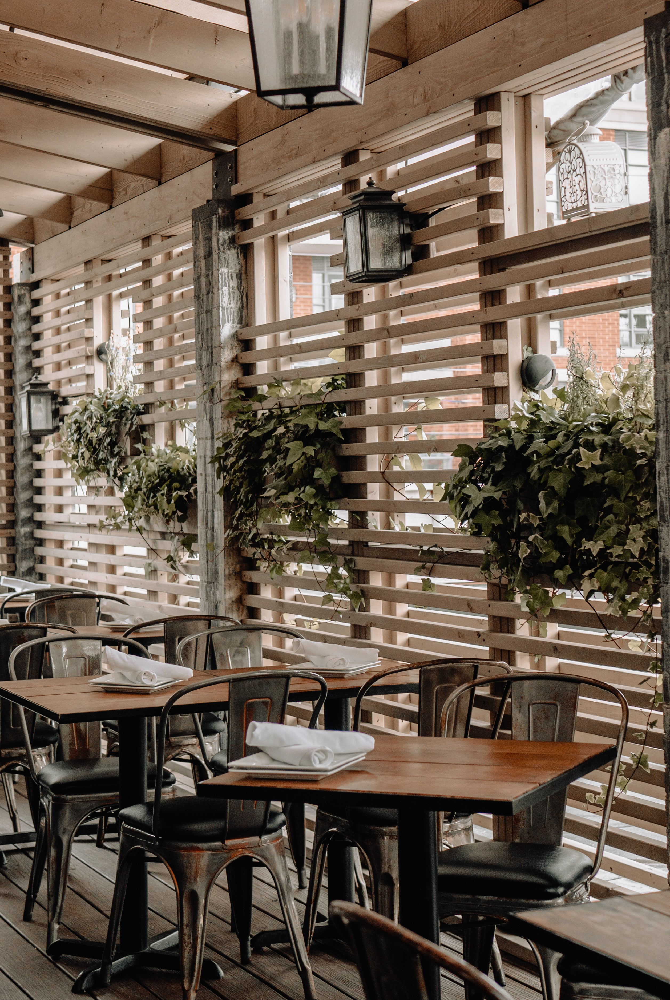

リニューアルオープンしました！
5/162025
カテゴリー：お店の紹介

このたび、Café ORGANICAはリニューアルオープンいたしました！ 店内はより自然を感じられる空間へと生まれ変わり、木の温もりと植物の緑に囲まれた落ち着きのある内装になりました。以前よりもゆったりと過ごしていただけるよう、座席や照明にもこだわっています。おひとりでも、ご友人やご家族とのひとときにも、心地よくお過ごしいただけます。
また、リニューアルに合わせてメニューも一新。オーガニック素材を活かした新メニューを多数ご用意し、体にやさしいラインナップとなっています。人気の自家製スイーツや季節限定ドリンクもぜひお試しください。これからも皆さまに愛されるお店づくりを目指してまいりますので、変わらぬご愛顧のほどよろしくお願いいたします。
Café ORGANICA 店長より